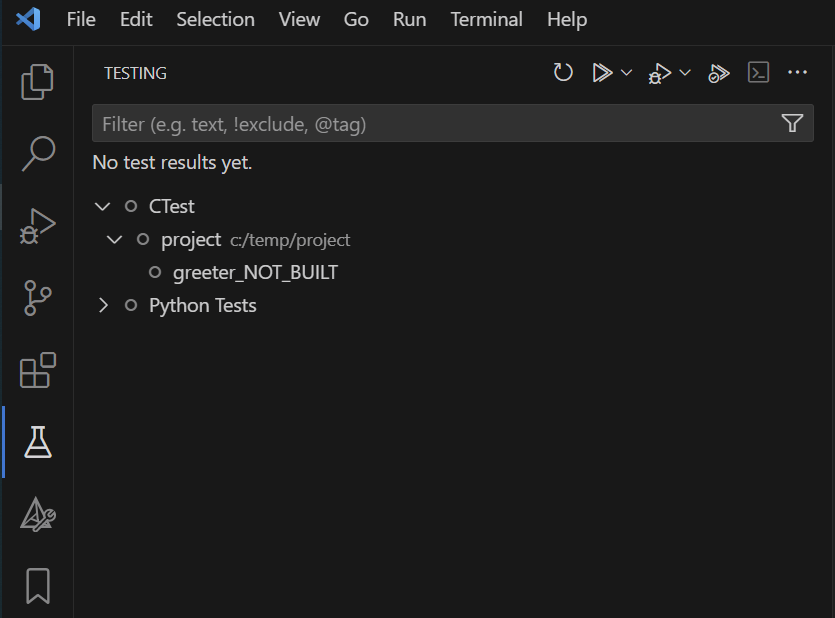

Posted in 2025
SPL Bootstrap - Handle Python Version
- 24 November 2025
Document headings start at H2, not H1 [myst.header]
The pipeline implementation for our Software Product Line (SPL) repositories uses the pypeline Python application.
In order to start the pypeline application, we need to install Python (with a specified version) and create the Python virtual environment.
This step we call bootstrap and it is implemented here.
SPL components in YANGA
- 15 October 2025
When building software products, you often need different variants for different purposes (like a basic vs. a pro version). These variants consist of components that implement the features required for that particular variant. Each variant might be built for different platforms, different hardware environments with their own constraints and capabilities.
When thinking about components, there are two main categories:
SPLED meets Arduino Uno
- 03 October 2025
For our Software Product Line Engineering (SPLE) training we use the SPLED repository, which is a simple software product line for controlling an LED with different variants:
Disco: the LED blinks and one can change the blinking frequency
What you did not want to know about your code
- 26 September 2025
As any other engineer, I also like to hack around in the weekends at six o’clock in the morning when the family is still asleep. This time I wanted to play around with the new Matter smart home connectivity standard and add some temperature and humidity sensors to my smart home setup.
I bought some esp32-h2 development boards (they support WiFi, Thread and BLE), some SHT31-D sensors and started the old fashioned read the docs to get started.
I must say the espressif docs are well written and the community is very active.

Why unit tests crashed on windows but worked on the microcontroller
- 24 September 2025
When writing cross-platform code, it’s easy to forget that pointers don’t always have the same size. This caused a segmentation fault in one of our unit tests.
On the Aurix MCU, pointers are 32-bit.
In the code a pointer (memory address) was stored in a uint32_t variable.
That worked fine on the target.
Coding Dojo - Detect CI Context
- 08 March 2025
Coding Dojos are a great way to practice and enhance your skills in Test-Driven Development (TDD), software craftsmanship, and incremental software design. In this blog post, we’ll explore how to implement the Detect CI Context coding example using Python.
You’ll learn how to:
Making Unit Tests Visible in Visual Studio Code with CTest and GoogleTest
- 05 February 2025
Many C/C++ projects rely on CMake, GoogleTest (GTest), and GoogleMock (GMock) for unit testing. Sometimes developers want to see and run/debug these tests directly in their IDE.
In this blog post, I will show how to make the unit tests visible in Visual Studio Code (VS Code) using CTest and GoogleTest. I will start by explaining the standard way to build and run the tests with CMake. Then we will see how CTest can help us discover the tests and how to display them in the VS Code interface.
Allocate Code and Data to Specific Memory Sections
- 07 January 2025
There was a question in our support channel about the memory sections from an external library.
The colleague was trying to understand how the different sections were defined for the library and how they were placed in memory.
When checking the linker configuration file (*.lsl) the observation was that the memory sections for:
all the objects for our code, the section pattern was .<type>.<filename>.<symbol>. For example, select .text.component.main or select .data.component.my_var.